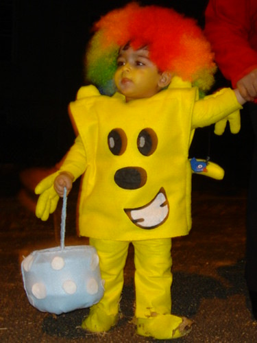
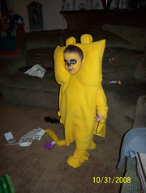
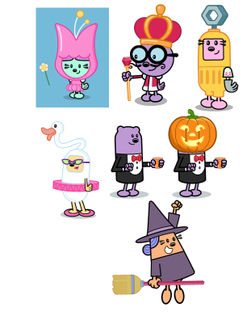
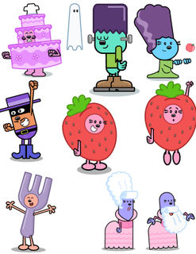
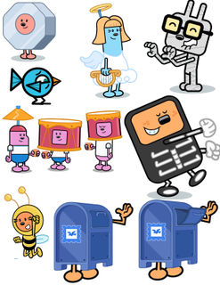
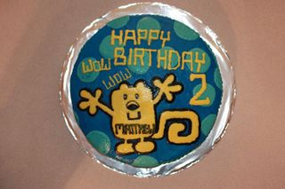

Check out this awesome costume! I got this photo of Daniel from his mom, Bibi. Bibi knew that Daniel just had to have a Wubbzy costume, so she made one just for him. I love that the way that they used the rainbow wig and she even put a little birdie bird on his tail!! Way to get creative, guys. Thanks to everyone for sending in all of the great costume photos, and if you have one that you haven't sent in, don't be bashful. I'll keep postin' 'em! - Carrie

Halloween Fun!

Well, even though Halloween is over, there is celebrating to be done. We got some GREAT photos back from Trick-or-Treaters that went out as Wubbzy. You'll find the adorable Noah and super cute Sterling all dressed up for candy collectin'. Both of these fantastic costumes were home crafted and what a great job!
I also got a beautifully carved Wubbzy pumpkin, too! This photo comes from Kayleigh, a soon-to-be 2-year-old who is a super big fan of Wubbzy. Her mommy and a friend crafted their masterpiece pumpkin just for her.
Great job on all of your Halloween crafts, guys! Keep sending more in! - Carrie

Well, even though Halloween is over, there is celebrating to be done. We got some GREAT photos back from Trick-or-Treaters that went out as Wubbzy. You'll find the adorable Noah and super cute Sterling all dressed up for candy collectin'. Both of these fantastic costumes were home crafted and what a great job!
I also got a beautifully carved Wubbzy pumpkin, too! This photo comes from Kayleigh, a soon-to-be 2-year-old who is a super big fan of Wubbzy. Her mommy and a friend crafted their masterpiece pumpkin just for her.
Great job on all of your Halloween crafts, guys! Keep sending more in! - Carrie
Wubbzy Pumpkins!
Look at this creative masterpiece! From our friend Jennifer in Michigan! ; ) Happy Halloween everyone!


Wow! Wow! -Angie
DIY Piñata!

Jennifer sends us this fabulous How-To so that you can make your very own Wubbzy piñata or decoration. As you can see, her little one, Carl, is enjoying his!
Piñata or Decoration How-T o:
You Need:
- cereal box
- glue
- yellow crepe paper/yellow construction paper
- markers
- scissors
- drinking straws
- tape
Cover the cereal box with construction paper & crepe paper using tape & glue or just use yellow construction paper.
Next build arms, legs and tail with straws, using tape
Go over with crepe paper & draw your Wubbzy face (and don't forget to glue on the ears!)
If using as a piñata just add string to hang from top and opening for candy.
Thanks Jennifer, and I hope that you DIY-ers out there will send your own results! - Carrie
Costumes Galore!

If you caught this morning's Halloween episode of Wow! Wow! Wubbzy you surely got quite the treat (or trick!?). I couldn't get over all of the great and creative costumes that our artists came up with. So much fun! I pulled them all so you guys could check them out in closer detail, because they're totally worth it. - Carrie



Yep, Matthew Looks 2 Alright!

Matthew turned two recently, and would have NOTHING but a Wubbzy themed birthday party. You can see that Mom & Dad went to lots of trouble and made these totally cool, larger-than-life cutouts (which they markered & crayoned onto giant bulletin board paper). They also made a kickity kickball cake with Wubbzy on top. It looks like so much fun, and I can't get over the "Does this shirt make me look 2?" shirt that Matthew is wearing. Too funny!
Happy Birthday Matthew, and thanks for having Wubbzy at it! - Carrie


{kind=link}
{kind=link}
{kind=link}
{kind=link}
{kind=link}
{kind=link}
{kind=link}
Holy Halloween!
I just found out that a brand spankin' new episode of Wubbzy will be airing tomorrow at 9am on Nick, Jr. for Halloween! I checked it out and it is TOO CUTE for words! I don't want to spoil it, but it is by far one of my favorite episodes now. I'll post more artwork tomorrow, but for now, here is a super quick, sneak peak! - Carrie